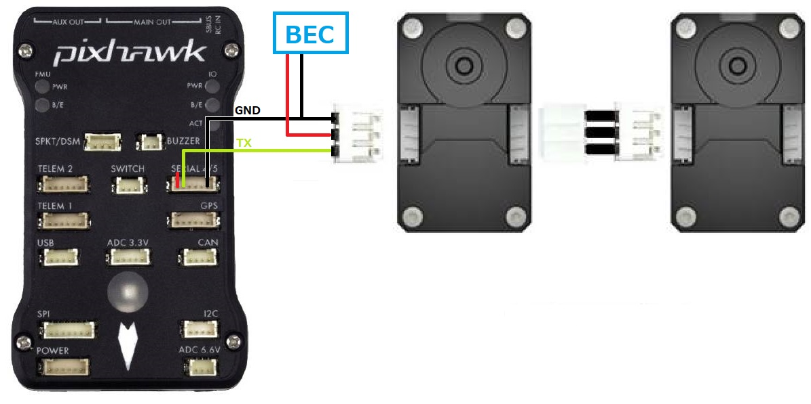

Robotis Servos¶
Robotis Dynamixel servos are relatively expensive but high-end “smart actuators” that can be controlled by ArduPilot once connected to the autopilot’s serial port.
Robotis servos using the “Robotis Protocol version 2.0” are supported. Look for “Half duplex Asynchronous Serial Communication” in the “H/W SPECS” section of each servo. The XM430-W350-T in particular is known to work correctly with ArduPilot.
Note
Support for these servos is available in Copter-4.0, Plane-3.10 and Rover-3.5 (or higher)
Where to Buy¶
Robotis Shop’s Actuator section
1x U2D2 is also recommended to allow easy configuration of the servos (online manual)
Configuring the Servos¶
The ID for each servo needs to be set using the R+ Manager configuration tool.
DYNAMIXEL Wizard 2.0 is the latest DYNAMIXEL configuration tool that supports Windows / Linux / Mac OSX.
Open the robotis.us/roboplus2 website, in the “R+ Manager 2.0” row, download and install the “2.0.1 Windows (exe)”
Attach the U2D2 to the servos as described in the online manual
Start the R+ Manager, connect to the appropriate COM port and set each servo’s ID to a value from 1 to 16. The number chosen for each servo should correspond to the servo number used to configure and control the servo. For example if the ID is set to “9”, the SERVO9_MIN, SERVO9_MAX, SERVO9_FUNCTION, etc parameters will be used to configure the servo.
{kind=link}
Connecting and Configuring¶
{kind=link}
Connect one of the servos to any serial port on the autopilot. In this example SERIAL4 is used but any serial port should work
Additional servos should be connected to the first by daisy chaining them as shown above
Set the following parameters on the autopilot
SERIAL4_PROTOCOL = 19 (“RobotisServo”)
SERIAL4_BAUD = 57 (57600 baud)
SERIAL4_OPTIONS = 4 to enable half-duplex mode
Testing with the Mission Planner¶
The mission planner’s Flight Data screen includes a “Servo” tab on the bottom right that can be used to test that the servos are moving correctly.